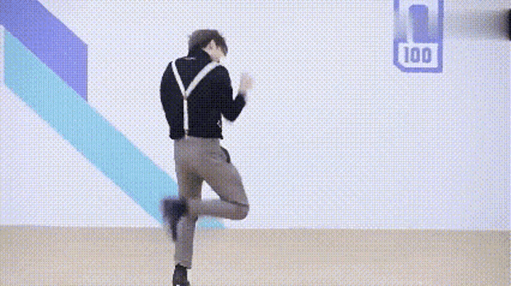

只因你太美 baby 只因你太美 baby
只因你實在是太美 baby 只因你太美 baby
迎面走來的你讓我如此蠢蠢欲動
這種感覺我從未有
Cause I got a crush on you who you
你是我的我是你的誰
再多一眼看一眼就會爆炸
再近一點靠近點快被融化
想要把你占為己有baby bae
不管走到哪裡都會想起的人是你 you you
我應該拿你怎樣
Uh 所有人都在看著你
我的心總是不安
Oh 我現在已病入膏肓
Eh eh 難道真的因為你而瘋狂嗎
我本來不是這種人
因你變成奇怪的人
第一次呀變成這樣的我
不管我怎么去否認
只因你太美 baby 只因你太美 baby
只因你實在是太美 baby 只因你太美 baby
Oh eh oh 現在確認地告訴我
Oh eh oh 你到底屬於誰
Oh eh oh 現在確認地告訴我
Oh eh oh 你到底屬於誰 就是現在告訴我
跟著這節奏 緩緩 make wave
甜蜜的奶油 it's your birthday cake
男人們的 game call me 你戀人
別被欺騙愉快的 I wanna play
我的腦海每分每秒只為你一人沉醉
最迷人讓我神魂顛倒是你身上香水
Oh right baby I'm fall in love with you
我的一切你都拿走只要有你就已足夠
我到底應該怎樣
Uh 我心裡一直很不安
其他男人們的視線
Oh 全都只看向你的臉
Eh eh 難道真的因為你而瘋狂嗎
我本來不是這種人
因你變成奇怪的人
第一次呀變成這樣的我
不管我怎么去否認
只因你太美 baby 只因你太美 baby
只因你實在是太美 baby 只因你太美 baby
我願意把我的全部都給你
我每天在夢裡都夢見你還有我閉著眼睛也能看到你
現在開始我只準你看我
I don't wanna wake up in dream 我只想看你這是真心話
只因你太美 baby 只因你太美 baby
只因你實在是太美 baby 只因你太美 baby
Oh eh oh 現在確認的告訴我
Oh eh oh 你到底屬於誰
Oh eh oh 現在確認的告訴我
Oh eh oh 你到底屬於誰就是現在告訴我